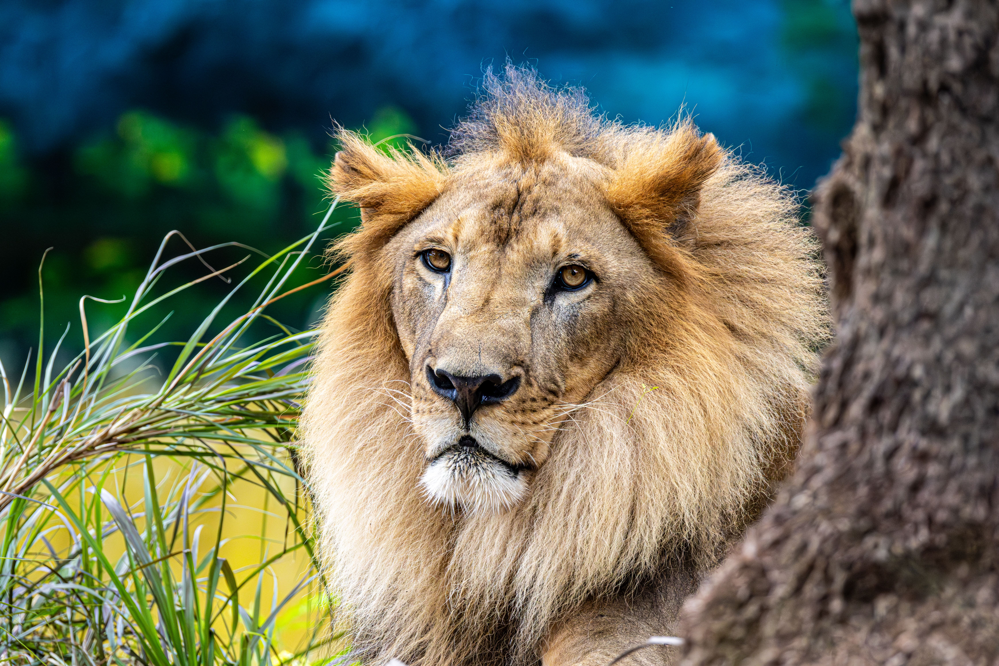
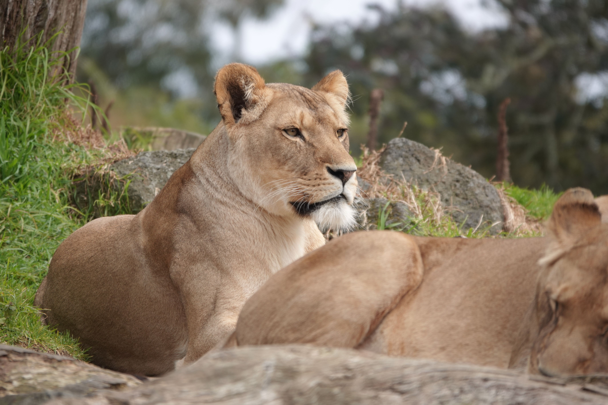

Introduction
Few animals command respect the way a lion does. Stand anywhere near the African savanna at dusk and you will feel it before you even see him: the low, rolling roar that carries up to eight kilometers across the grassland, , a sound that seems to say, this land belongs to me. It is hard not to feel small in that moment.
A lion’s ferocity is real. Males can weigh over 190 kilograms, and a single swipe of a paw can bring down prey many times its own size.
- Their jaws are powerful
- Their claws are razor-sharp

His qualities go beyond brute force.
- A lion is courageous
- Defending his pride against rival males, hyenas, and any threat that dares come near
- He is territorial and protective, patrolling his land and marking it with scent and roar

But here is a truth that often goes unspoken: a king is only as strong as the one who stands beside him. The lioness is the true backbone of the pride. She is smaller, faster, and sharper, and she does most of the hunting. Working together with other lionesses, she plans, stalks, and ambushes prey with remarkable teamwork.
Properties of Lion and Lioness.
| Lion | Lioness |
|---|---|
| Has a thick mane around the head and neck | Has no mane |
| Larger and heavier body | Smaller and lighter body |
| Mainly defends the territory and the pride | Does most of the hunting for the pride |
| Leaves the birth pride when it grows up | Usually stays in the pride it was born in |
| Shorter life in the wild because of fights | Usually lives longer in the wild |